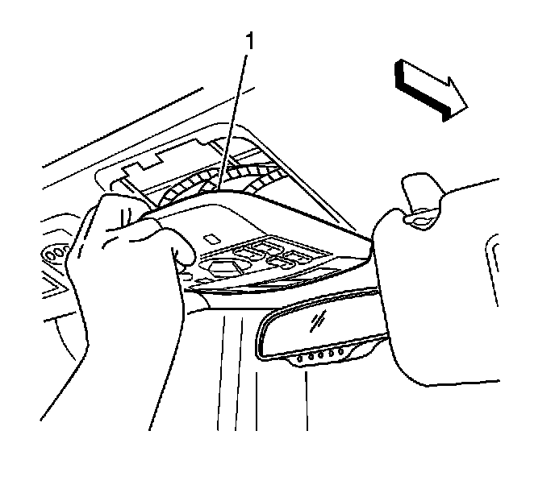

Windshield Washer Switch: Service and Repair
Rear Window Wiper and Washer Switch Replacement
Removal Procedure

1. Using your fingers, gently pull downward at the front edge of the overhead console (1).
2. Disconnect the electrical connectors.
3. Remove the overhead console.
4. Remove the rear window wiper switch.
Installation Procedure
1. Install the rear window wiper switch.
2. Connect the electrical connectors.
3. Install the overhead console into the headliner opening.
4. Ensure the locking tabs are properly positioned.
5. Press upward on the overhead console (1) to secure the locking tabs to the console bracket.